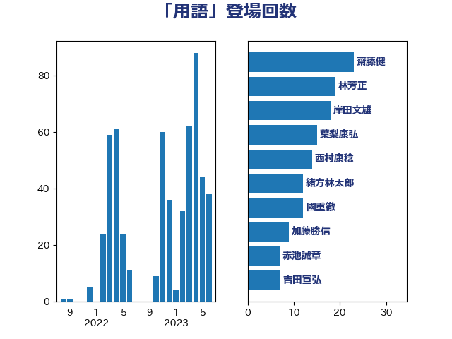

単語「用語」

| 齋藤健 | 自由民主党 | 23 回 |
| 林芳正 | 自由民主党 | 19 回 |
| 岸田文雄 | 自由民主党 | 18 回 |
| 葉梨康弘 | 自由民主党 | 15 回 |
| 西村康稔 | 自由民主党 | 14 回 |
| 緒方林太郎 | 無所属 | 12 回 |
| 國重徹 | 公明党 | 12 回 |
| 加藤勝信 | 自由民主党 | 9 回 |
| 赤池誠章 | 自由民主党 | 7 回 |
| 吉田宣弘 | 公明党 | 7 回 |
| 石破茂 | 自由民主党 | 6 回 |
| 後藤茂之 | 自由民主党 | 6 回 |
| 山岸一生 | 立憲民主党 | 6 回 |
| 小林鷹之 | 自由民主党 | 6 回 |
| 阿部知子 | 立憲民主党 | 5 回 |
| 永岡桂子 | 自由民主党 | 5 回 |
| 小倉將信 | 自由民主党 | 5 回 |
| 土田慎 | 自由民主党 | 5 回 |
| 西村智奈美 | 立憲民主党 | 4 回 |
| 福島みずほ | 社会民主党 | 4 回 |
| 打越さく良 | 立憲民主党 | 4 回 |
| 小沼巧 | 立憲民主党 | 4 回 |
| 古川禎久 | 自由民主党 | 4 回 |
| 伊東信久 | 日本維新の会 | 4 回 |
| 仁比聡平 | 日本共産党 | 4 回 |
| 仁木博文 | 無所属 | 4 回 |
| 三宅伸吾 | 自由民主党 | 4 回 |
| 高木かおり | 日本維新の会 | 3 回 |
| 馬場伸幸 | 日本維新の会 | 3 回 |
| 青山繁晴 | 自由民主党 | 3 回 |
| 阿部司 | 日本維新の会 | 3 回 |
| 萩生田光一 | 自由民主党 | 3 回 |
| 若宮健嗣 | 自由民主党 | 3 回 |
| 石井苗子 | 日本維新の会 | 3 回 |
| 本村伸子 | 日本共産党 | 3 回 |
| 山田勝彦 | 立憲民主党 | 3 回 |
| 大島九州男 | れいわ新選組 | 3 回 |
| 坂本哲志 | 自由民主党 | 3 回 |
| 嘉田由紀子 | 無所属 | 3 回 |
| 北神圭朗 | 無所属 | 3 回 |
| 伴野豊 | 立憲民主党 | 3 回 |
| 高良鉄美 | 無所属 | 2 回 |
| 高市早苗 | 自由民主党 | 2 回 |
| 馬場雄基 | 立憲民主党 | 2 回 |
| 青木愛 | 立憲民主党 | 2 回 |
| 鈴木宗男 | 日本維新の会 | 2 回 |
| 鈴木俊一 | 自由民主党 | 2 回 |
| 逢坂誠二 | 立憲民主党 | 2 回 |
| 紙智子 | 日本共産党 | 2 回 |
| 篠原豪 | 立憲民主党 | 2 回 |
| 石橋通宏 | 立憲民主党 | 2 回 |
| 石川博崇 | 公明党 | 2 回 |
| 猪口邦子 | 自由民主党 | 2 回 |
| 浜田靖一 | 自由民主党 | 2 回 |
| 河野太郎 | 自由民主党 | 2 回 |
| 沢田良 | 日本維新の会 | 2 回 |
| 柚木道義 | 立憲民主党 | 2 回 |
| 新妻秀規 | 公明党 | 2 回 |
| 川田龍平 | 立憲民主党 | 2 回 |
| 岩屋毅 | 自由民主党 | 2 回 |
| 宮本岳志 | 日本共産党 | 2 回 |
| 塩村あやか | 立憲民主党 | 2 回 |
| 吉田はるみ | 立憲民主党 | 2 回 |
| 上田清司 | 国民民主党 | 2 回 |
| 鬼木誠 | 立憲民主党 | 1 回 |
| 高階恵美子 | 自由民主党 | 1 回 |
| 馬淵澄夫 | 立憲民主党 | 1 回 |
| 青島健太 | 日本維新の会 | 1 回 |
| 階猛 | 立憲民主党 | 1 回 |
| 阿部弘樹 | 日本維新の会 | 1 回 |
| 鈴木貴子 | 自由民主党 | 1 回 |
| 鈴木敦 | 国民民主党 | 1 回 |
| 重徳和彦 | 立憲民主党 | 1 回 |
| 酒井庸行 | 自由民主党 | 1 回 |
| 赤澤亮正 | 自由民主党 | 1 回 |
| 西田実仁 | 公明党 | 1 回 |
| 藤岡隆雄 | 立憲民主党 | 1 回 |
| 菊田真紀子 | 立憲民主党 | 1 回 |
| 船田元 | 自由民主党 | 1 回 |
| 羽田次郎 | 立憲民主党 | 1 回 |
| 美延映夫 | 日本維新の会 | 1 回 |
| 米山隆一 | 立憲民主党 | 1 回 |
| 穀田恵二 | 日本共産党 | 1 回 |
| 福島伸享 | 無所属 | 1 回 |
| 石川大我 | 立憲民主党 | 1 回 |
| 田村智子 | 日本共産党 | 1 回 |
| 田中英之 | 自由民主党 | 1 回 |
| 牧島かれん | 自由民主党 | 1 回 |
| 牧山ひろえ | 立憲民主党 | 1 回 |
| 漆間譲司 | 日本維新の会 | 1 回 |
| 浜野喜史 | 国民民主党 | 1 回 |
| 浜田聡 | NHK党 | 1 回 |
| 梅村聡 | 日本維新の会 | 1 回 |
| 根本匠 | 自由民主党 | 1 回 |
| 松野博一 | 自由民主党 | 1 回 |
| 松沢成文 | 日本維新の会 | 1 回 |
| 松本剛明 | 自由民主党 | 1 回 |
| 松原仁 | 立憲民主党 | 1 回 |
| 末松信介 | 自由民主党 | 1 回 |
| 新藤義孝 | 自由民主党 | 1 回 |
| 斎藤アレックス | 国民民主党 | 1 回 |
| 志位和夫 | 日本共産党 | 1 回 |
| 庄子賢一 | 公明党 | 1 回 |
| 平木大作 | 公明党 | 1 回 |
| 市村浩一郎 | 日本維新の会 | 1 回 |
| 岩谷良平 | 日本維新の会 | 1 回 |
| 岩渕友 | 日本共産党 | 1 回 |
| 小野泰輔 | 日本維新の会 | 1 回 |
| 小西洋之 | 立憲民主党 | 1 回 |
| 宮澤博行 | 自由民主党 | 1 回 |
| 天畠大輔 | れいわ新選組 | 1 回 |
| 塩川鉄也 | 日本共産党 | 1 回 |
| 前川清成 | 日本維新の会 | 1 回 |
| 倉林明子 | 日本共産党 | 1 回 |
| 佐藤啓 | 自由民主党 | 1 回 |
| 中村裕之 | 自由民主党 | 1 回 |
| 上野通子 | 自由民主党 | 1 回 |
| 上田英俊 | 自由民主党 | 1 回 |
| 三木圭恵 | 日本維新の会 | 1 回 |
| ながえ孝子 | 無所属 | 1 回 |